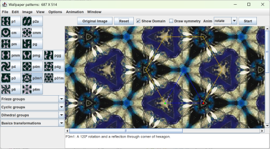

Wallpaper patterns - Help
The Wallpaper Pattern Java application creates repeating patterns based on an image and the 17 mathematical plane symmetry groups.
For further assistance you can email rich@singsurf.org.
Installation
The package requires a Java JDK version 21 or newer to load. You can download one from either
To install the program first install the jdk and just unpack the zip file into a suitable directory. No other action should be needed.
Starting the program
The program can be run in a number of ways:
- Double clicking on the wallpaper.bat file - opens with a default image.
- Double clicking on the wallpaper.jar file - will open with default image.
- Running wallpaper.bat on the command line
wallpaper.bat filename.jpg- runs with the selected filenamewallpaper.bat filename.jpg 800 600- runs with the selected filename and specified window size
- Running
java -Xmx512m -jar wallpaper.jar image.jpg 800 600runs the program with more memory allocated, useful for working with very large images
Using the program
The program dispaly a window showing either an image or a tesselation created from part of the image.

Selecting tessellations
A tessellation can be selected by choosing one of the buttons on the left hand side of the screen. These list the 17 wallpaper groups based around lattice structures. See mathematical description for details of these. Additional tessellations for the 7 frieze group and cyclic and dihedral groups can be pull down menus below. The basics pull down menu allows the basic transformations to be applied: translations, rotations, reflections, glide-reflections, uniform scaling, and general linear transformations to be applied.
The shape of the domain can be altered by dragging the red, green and blue points. For some groups only the red and green points are visible. It sometimes happens that the some of the points will be lost outside the screen. If that happens the Reset button can be used to load a default configuration.
Two sets lines are shown. The blue lines are the fundamental domain. The resulting image is constructed by taking the points inside this region and rotating, reflecting and translating them to fill the screen. The yellow lines give the shape of the lattice cells, which are either parallelograms or hexagons. These shapes tessellate the screen and each lattice cell contains exactly the same image, up to translation, as every others cell.

In the above image the fundamental domain is the blue rectangle four copies of it are used the fill the yellow rectangle. The Yellow rectangle is copies to tile the screen.
Further details like the symmetry lines can be shown by using the view menu. Cells and tiles can be outlined in black, the selection points and fundamental domain can be shown and hidden. Reflection lines in green, glide reflection lines in dashed red and rotation points in yellow can be shown. 180° degree rotation points are shown as a yellow circle 60° as yellow triangles and 90° as yellow squares and 120° as yellow hexagons.
File menu
Image files can be loaded and saved using the File menu. When saving the image file the the visible image is saved. This can be the original image or the tessellated image. Any overlaying points or lines are also saved. So ensure the correct parts are displayed using the View menu.
Saving very large images
If a very large image is required, say 8000 by 6000, this can cause problems with memory as they can take 50MB memory or more. Some improvement can be made by increasing the size of heap space allocated when the program is used using
java -Xmx512m -jar wallpaper.jar image.jpg 800 600
to allocate 512 megabytes heap space. Swap space on your computer may also be a limiting factor.
To allow such large images to be saved the Save expanded menu item on the File menu can be used, this allows the desired output size to be set. This option only supports ppm and bmp format images.
Saving patterns and sequences
Patterns, comprising a wallpaper group specifation and a set of verties of the fundamental domain, can be saved using the Save pattern option on the File menu.
Pattern files are formated like:
group: P3m1 vertices: - [471,257] - [343,257] - [279,146]
They can be loaded and saved using the Load pattern and Save pattern option on the File menu. Files have the ".pat" extension.
It is possible to save a script with a sequence of animations, as a set of frames where each frame specifies a different pattern, animation type and optionally a different image file. They are save in a file with the ".seq" extension. Each frame in the sequence is run in order and the sequence repeated until the stop button is pressed.
Sequence files are formatted like:
frame: group: P4m vertices: - [451,257] - [323,257] - [323,129] filename: C:\Users\rich\wallpaper\images\bark.jpg zoom: [1,1] anim: left repeat: 10 frame: group: P4 vertices: - [333,970] - [445,970] - [445,858] filename: images\lilly sml.jpg zoom: [3,2] anim: SE repeat: 4
The fields are:
- frame: specifies the start of a new frame.
- group: specifies the wallpaper group to be used.
- vertices: specifies the vertices of the fundamental domain.
- filename: specifies the image to be used. (optional)
- zoom: specifies the zoom factor to be used
[2, 3] (optional)for a zoom factor of 2/3. - anim: specifies the type of animation to be used.
up,downetc. - repeat: specifies how long the animation will run for, in seconds.
Sequence files can be loaded and saved using the Load sequence and constructed using the Append sequence options on the File menu. Sequences are constructed in multple steps, by appending multiples frames to the same file. At each step a dialog will be shown to allow the user to set the running time for the animation and The current pattern, filename and animation will be saved.
Some sample sequence files are included in the sequences directory. These are
- sequences/all patterns.seq - all the regular wallpaper groups.
- sequences/all friezes.seq - all the freize groups
- sequences/all cyclic.seq - all the cyclic and dyhedrai groups.
- sequences/image sequence.seq - a sequence different images with different groups.
Creating rectangular tiles
Rectangular tiles which can be used to tile a desktop background can be produced. However, not all patterns have the correct geometry to create such tiles: typically one edges of the domain need to be horizontal or vertical. To assist in creating such tiles select Constrain vertices from the options menu. This will restrict the possible domains only allowing display coordinates of the domain and whether rectangular tiles can be created. A green rectangle is also displayed when rectangular tiles can be created.
If possible the tileable region can be saved using the Save Tile option on the File menu.
Image menu
The image menu allows some image manipulation to be carried out.
- Zoom - zoom in or out of the image. The zoom factor is a fraction of the original image size. Preserves the underlying image. Crop crop the image, modifying the underling image
- Expand - expand the size of the image, either tiling the image or adding a background colour. The background colour can be set using the Set background option on the options menu. This modifies the underlying image
- Rescale - rescale the undelying image. This modifies the underlying image
- Flip/Rotate - flip the image horizontally or vertically or rotate the image by multiples of 90 degrees. This modifies the underlying image.
- Split - split the display into two halves, the left half shows the underlying image and the right half show the result of the tesselation. Preserves the underlying image.
Finer cotrol can be obtained by using the Basic Transform to rotate by a precise amount, and then copying and pasting the image.
Windows menu
The Windows menu has a single option Full screen which displays the image in full screen mode. All controls are hidden and the image is expandes to fill the screen. Use the F11 toggle full screen mode and and ESC keys to return to the normal screen.
Shortcut keys
The shape of the domain can be altered using the keyboard. The following keys are used:
- Arrow keys - translate the domain around the screen.
- W, A, S, D - move the green selection point.
- T, F, G, H - move the red selection point.
- I, J, K, L - move the blue selection point.
- Space - toggle the animation on and off.
- N - next frame in a sequence.
- P - previous fraame in a sequence.
- F11 - toggle full screen mode.
- ESC - exit full screen mode.
Version history
- Version 1.7 - 30 April 2025
-
- Allow full screen mode
- Sequences of animations can saved and loaded to/from files
- W, A, S, D; T, F, G, H; I, J, K, L keys can be used to move the selection points
- Alternate domains for some groups can be selected.
- Version 1.6 - 17 April 2025
-
- Now uses Java version 21
- Add smooth Lissajous based animation
- Add a split screen mode to show the original image and the tiled image side by side
- Saving works better with zoomed images
- Add and ImagePreview to the file load and save dialogs
- Version 1.5 - 17 September 2014
-
- Neater teselation panel
- Use hexagonal based tile for P2
- Version 1.4 - 15 July 2009
-
- Speed up rendering of patterns
- Add basic trandformations:translate, scale, linear etc.
- Show all symmetries for all types
- Better algorithm for calculation of desktop tiles.
- Allow saving expanded images as bmp format.
- The current visible display can be copied to clipboard.
- Version 1.3 - 26 April 2008
-
- Allow creation of tillable images.
- Version 1.2 - 21 June 2007
-
- Allow uppercase file extensions.
- Allow animations to be restarted. NE, NW animations.
- Some interface improvements
- Coordinates can be shown
- Version 1.1 - 04 June 2007
-
- Screen-saver version.
- Load and save patterns
- Speed up for hexagon based patterns
- Rotation points and reflection/glide-reflection points can be drawn
- Ability to animate a pattern, a new algorithm based on lattice points speeds up the calculation making this possible.
- Reduced memory footprint
- Background colour used to fill unknown regions can be set or the background tiled
- Key board arrow keys can move the domain
- Zoom in
- Cut and paste from system clipboard
- Resize, rescale and flip now adjust the fundamental domain and lattice points to match
- Report errors in dialog when loading/saving an image.
- Known bugs: flipping the image can corrupt the domain. Loading a zoomed pattern does not update menu items.
- Version 1.0 - 12 April 2007
-
- File load and save for common image types
- Save expanded - saves very large images in ppm format
- Image zoom, resize and rescale
- Frieze, cyclic and dihedral groups implemented
- Selection of regions for diamonds and rectangles improved
- Scrollable canvas
Copyright R Morris 2007